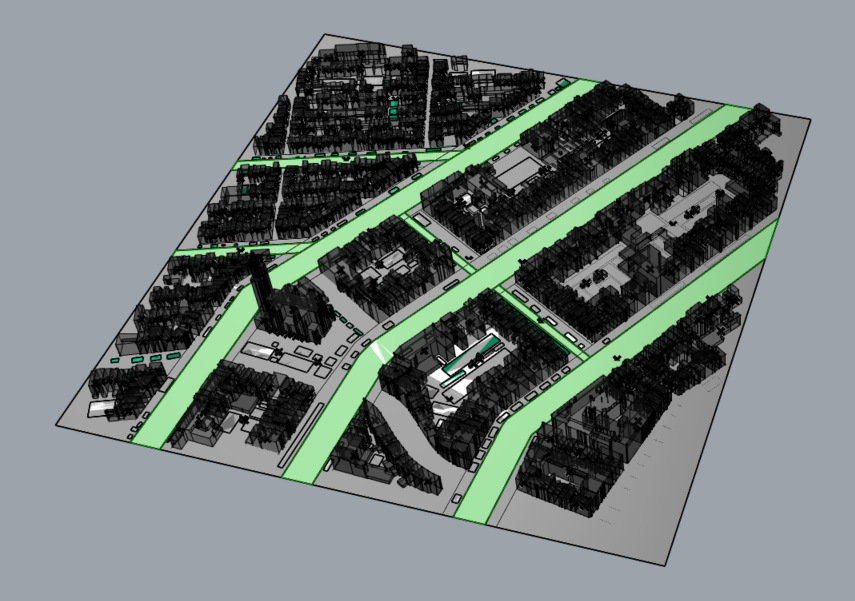

Modeling Urban Heat and Outdoor Thermal Comfort in Amsterdam
Baseline weather comparison with an exploratory green-roof scenario.
Independent personal project · Sole researcher
My contribution: Processed 3D city geometry, configured the urban model, generated weather with Dragonfly/UWG, and analyzed outdoor thermal comfort with Ladybug Tools.
Study overview
I developed a workflow connecting 3D BAG geometry, Dragonfly/UWG urban weather generation, and Ladybug thermal-comfort analysis for a 0.65 km² Amsterdam canal-district tile. My initial interest in green-roof retrofitting led to a broader comparison of reference weather and modeled urban conditions.
Main question: How does the modeled urban context change reference weather and the selected outdoor-comfort metrics?
Supplementary question: Does an exploratory green-roof scenario improve those outputs?
Outcome: The workflow produced weather and comfort comparisons between the reference and urban scenarios. The exploratory green-roof setup showed no improvement in the selected outputs. Its interpretation depends on verifying how roof vegetation entered the weather model.
Data and model assumptions
The reference weather figure identifies the station as Amsterdam–Schiphol Airport. I compare that reference with a generated urban EPW; the study does not include independent field measurements of the canal district.
| Input | Documented setup |
|---|---|
| Study area and geometry | 0.65 km² tile; 3D BAG LoD 1.3 building geometry, imported as CityJSON into Rhino/Grasshopper. |
| Weather | Amsterdam_062400_TMYx reference EPW and UWG-generated urban EPW. |
| Tools | Ladybug Tools v1.8, Dragonfly Core, UWG, Rhino, and Grasshopper. |
| Urban morphology | Mean building height 13.7 m; façade-to-site density 0.36; window-to-wall ratio 0.25. |
| Vegetation and heat | Tree cover 0.14; grass cover 0.09; anthropogenic heat 18 W/m² with weekday/weekend traffic schedules. |
| Terrain properties | Albedo 0.09; pavement thickness 0.72 m; conductivity 0.87 W/(m·K); volumetric heat capacity 2.8 × 10⁶ J/(m³·K). |
| Roof screening | RoofSurface geometry with pitch ≤ 5° and area ≥ 40 m². This screens geometric candidates; structural capacity and retrofit feasibility were not assessed. |
Methodology
- Prepare the urban context: Crop the 3D BAG tile, import CityJSON, and identify buildings and flat-roof candidates. Trace approximate street, canal, and vegetation geometry.
- Generate urban weather: Configure district morphology, surface properties, vegetation, and heat assumptions in Dragonfly/UWG to generate an urban EPW from the reference file.
- Compare weather and comfort: Examine temperature profiles and hourly differences, then compare Ladybug UTCI categories, thermal-status tiers, and binary comfort outputs for the reference and urban scenarios.
- Explore green roofs: Use the screened roof candidates in a supplementary retrofit setup. Scenario-specific UWG inputs and weather outputs require verification before attributing a district cooling response to vegetation.



Comparison design
| Scenario | Weather / setup | Purpose |
|---|---|---|
| Reference weather | Amsterdam–Schiphol TMYx EPW. | Reference for the modeled urban-weather comparison. |
| Urban baseline | UWG-generated EPW with conventional roofs. | Assess the modeled weather and comfort changes associated with the urban context. |
| Green-roof exploration | Vegetated-roof setup. A distinct retrofit EPW and the exported roof-vegetation parameters are not yet documented here. | Explore the retrofit question; the scenario setup limits the conclusion. |
Modeled weather comparison
The plotted urban temperature profiles generally sit above the reference profiles, with a more visible separation during warmer months. This is a model-generated heat-island signal under the stated inputs.


The comparison describes how UWG modifies the reference weather. Independent district observations would be needed to evaluate its accuracy for the actual site.
Outdoor thermal-comfort comparison
Ladybug outputs compare the reference and modeled urban scenarios using UTCI categories, hot/neutral/cold tiers, and comfortable/uncomfortable classifications. These figures describe the baseline-versus-urban comparison.


.png)
.png)
The retained component outputs show a change in the modeled comfort distribution. A reconciled hourly export, analysis period, and category thresholds are needed before reporting precise changes in stress-hour counts.
Supplementary experiment: green roofs
The exploratory green-roof setup showed no improvement in the selected outputs. This is a bounded observation from the implemented setup; it does not establish that green roofs are ineffective in Amsterdam.
The original scenario documentation labels both urban cases with an “UWG EPW.” To interpret a district-weather response, the next check is to verify that roof vegetation changed in the exported UWG inputs and that the retrofit produced a separate weather file. Dragonfly provides an explicit roof_veg fraction input, whose default is zero.
If both cases reused the same unchanged EPW, their air-temperature inputs would be identical. In that case, the result identifies a limitation in the workflow rather than quantifying vegetation’s effect on district air temperature. Any local radiant or comfort response would require its own documented model changes.
Roof coverage and anthropogenic heat are possible explanations for a small response, but this study does not include the sensitivity tests needed to establish those causes.
Interpretation and limitations
- Model-based case study: One district and one typical-year weather setup; results do not represent measured site conditions or a specific heatwave.
- District-scale weather: UWG represents average urban-canyon conditions. Street-by-street climate accuracy has not been established here.
- Scenario traceability: The green-roof setup needs verified roof-vegetation inputs and scenario-specific weather outputs before making mitigation claims.
- Approximate context: Traced vegetation and terrain, uniform assumptions, and geometric roof screening limit retrofit and comfort interpretation.
- Result precision: Precise temperature differences and stress-hour counts require consistent periods, thresholds, and original output exports.
Conclusion
This independent study connects open 3D city data, urban weather generation, and outdoor-comfort analysis in a single workflow. Its primary contribution is the comparison between reference weather and modeled urban conditions, supported by the retained weather and comfort outputs.
The green-roof exploration showed no improvement in the selected outputs under the implemented setup. Verifying scenario representation is necessary before interpreting that observation as a physical retrofit effect. The study provides a foundation for controlled sensitivity testing and more complete retrofit evaluation.
Next steps
- Verify scenario inputs: Check exported roof-vegetation fractions, software settings, and separate output paths for the urban baseline and retrofit.
- Export consistent comparisons: Report temperature differences, summer day/night summaries, and comfort-category hours using the same period and thresholds.
- Test sensitivity: Vary roof coverage and heat assumptions to distinguish a small modeled response from a setup that does not represent the intervention.
- Broaden evaluation: Compare additional mitigation scenarios and, where available, use local observations to assess the modeled urban weather.